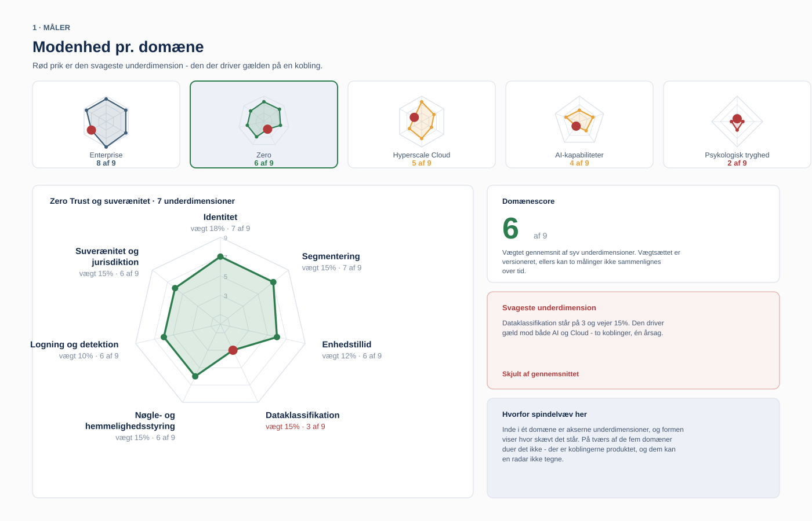
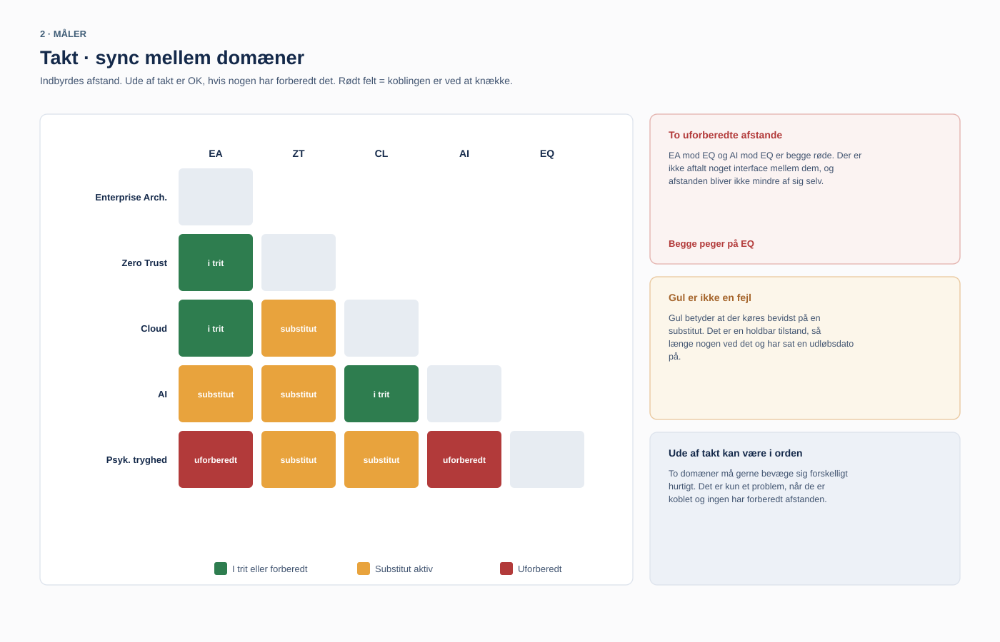
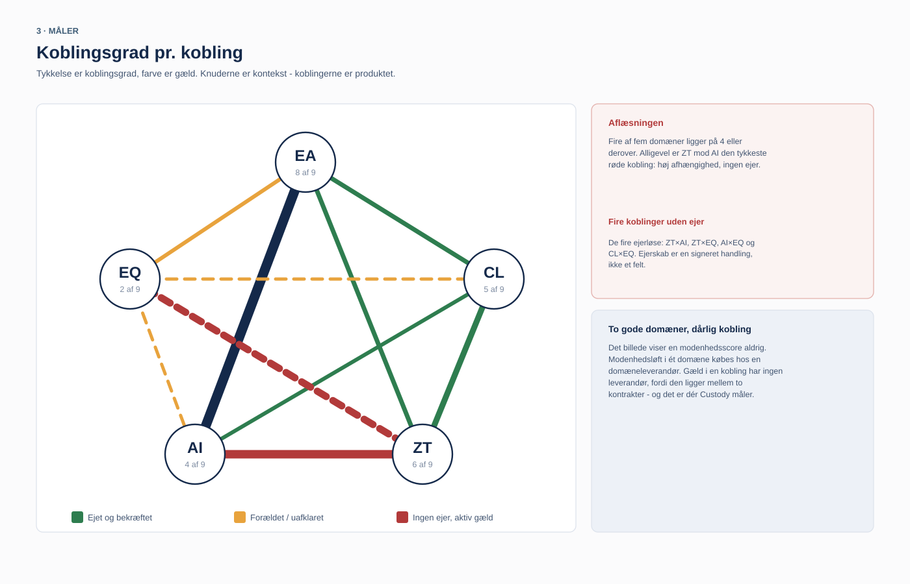
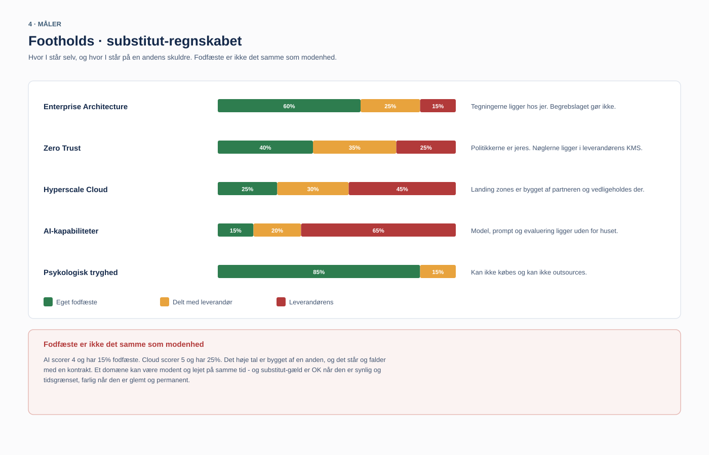
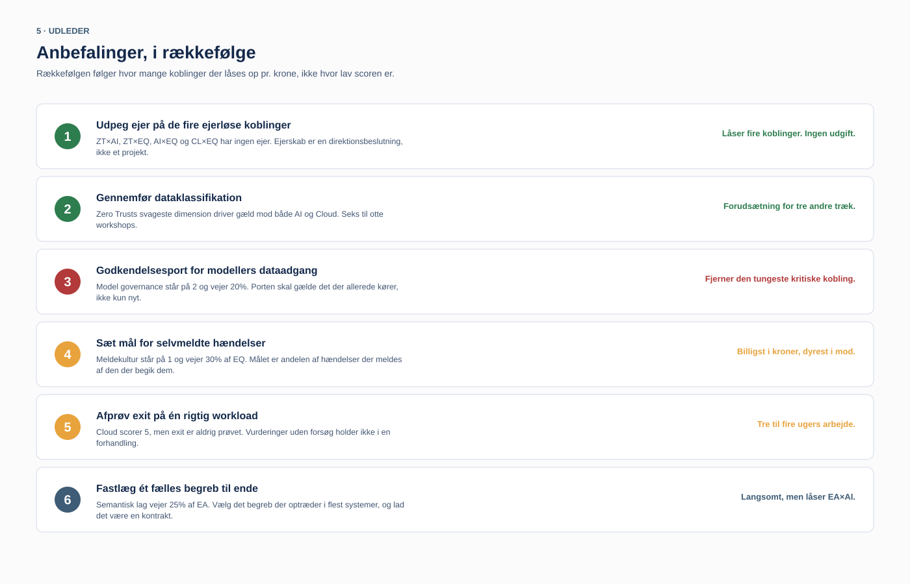
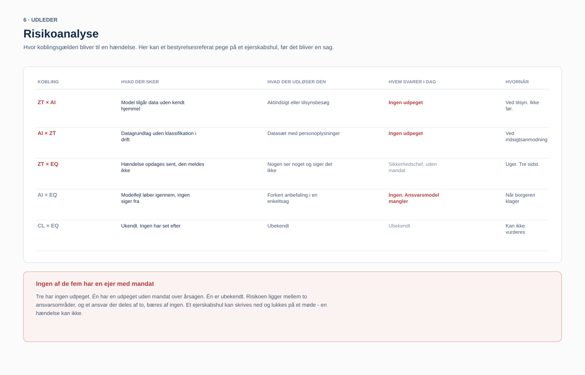

Looplo Custody
Custody gathers what today sits scattered across vendors into one overview you own and can take to the board. Not a tool you rent access to. One you hold.
Sound familiar
Someone asks what actually talks to what. And the answer takes a support ticket.
It did not happen because anyone cheated you. It happened gradually. The first integration was documented at the vendor, because that is where the work took place. So was the next. After three years, the map of your own couplings is something you rent access to.
You rarely notice it day to day. You notice it the day a vendor change, an audit, or a platform decision arrives with a deadline.
You do not own your architecture if you have to ask permission to see it.
The product
One overview of how your five domains stand, and where they fit together. The top four fields measure. The bottom two derive what the data points to doing now, and where a gap turns into risk.
How Custody explains it
What binds your domains together is hard to see until it breaks. Custody gathers it into six views where the picture explains itself. This is where it stops being a thesis and becomes something you can point to in a meeting.
Each domain gets a maturity on a scale, not a gut feeling. Pick one, and you see which sub-dimension drags it down. A high average can hide a gap. Here it cannot.

Two domains are allowed to move differently. It only becomes a problem when they are coupled and no one has prepared the distance. The red cells are the ones no one has agreed an interface on.

You know the nodes. The new thing is the lines between them. Thickness shows how tightly coupled, color how much unowned debt sits in the coupling. Two strong domains can still have a bad coupling.

Mature and rented are not the same. A domain can score high and still stand or fall with someone else's contract. Here ownership is stated in plain terms, not in trust.

The order follows how many couplings get unlocked per krone, not how low the score is. The cheap moves that shift the most come first.

The column that counts is not what happens, but who answers. A responsibility shared by two is carried by none. This is where a board minute can point to the gap before it becomes a case.

An ownership gap can be written down and closed in a meeting. An incident cannot.
What you get out of it
Where each domain stands, and where they fit together. In one place, where a status before took five meetings and a vendor in the room.
Maturity on a scale, not a gut feeling. A number you can point to, track over time, and stand behind when someone asks why.
The dashboard shows where an ownership gap sits while it is still closable. It is cheaper to see it on a screen than in an audit report.
An architecture tool gives leadership a map. A code tool gives a health score. Custody gives what neither does: the picture of how the domains fit together, which you own yourself.
In your own control
The node runs in your own environment, and you hold the key. That the vendor cannot read your data is something you get proven, not promised.
Looplo cannot read your data, not even technically. The picture is assembled at your place, behind your own lock.
Open formats, any time, with no notice period. The overview you build never leaves your hands.
You stay because the tool is good, not because you are locked in. No binding, no holding your own map hostage.
Custody is a technology provider, never a custodian. You hold the key and the asset. Custody holds nothing.
When
You need to be able to describe what moves, without asking the vendor you are leaving to draw the map.
For documentation you do not hold yourself. The answer should sit with you, not in a third party's support queue.
When no one can grasp what the decision touches. A wrong call here costs more than a whole year's subscription.
All three have one thing in common: they come with a deadline.
And then what
Once the picture sits with you, it can do more than give an overview. What you measure inward with Custody, you can show outward when you need to. The new AI era rewards those who can prove how things fit together, rather than claim it.
Get started
One hour, your own domains, no sales pitch. You see what the overview would look like at your place, and what you will hold the key to.
Book a walkthroughOr reach out directly: jacob@falkentorp.dk · +45 3142 1210